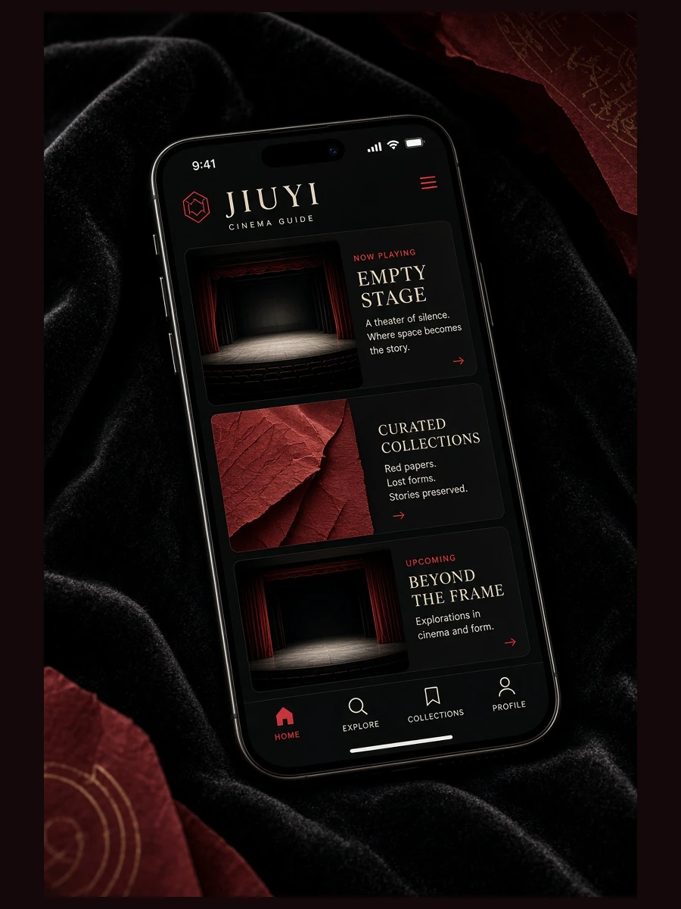

公开信息的当天整理
当日页面把能够核对的公开信息先做来源区分，再把需要补充的内容标明为整理中。不会以播放量、热度百分比或实时排名制造紧迫感；若资料只足以说明一个方向，就只写到能够确认的部分。
91 · JIUYI
91围绕公开影像资讯、编辑观察与移动阅读做持续整理。这里不以夸张标题追逐注意力，而是把来源边界、画面线索、阅读次序和状态说明放在同一套清楚路径里，让每一次进入都能先知道内容从哪里来、正在整理什么、接下来可以去哪里继续阅读。

🎥 镜场观察
镜场不提供危险拍摄方法，也不把画面当作猎奇材料。我们更关心白天城市里的层次、室内自然光的变化、窗口如何分割空间，以及街巷和空镜怎样把叙事速度慢下来。阅读时可以先看光线方向，再看人物与背景的距离，最后回到整段画面的情绪。
进入镜场📌 当日
当日页面把能够核对的公开信息先做来源区分，再把需要补充的内容标明为整理中。不会以播放量、热度百分比或实时排名制造紧迫感；若资料只足以说明一个方向，就只写到能够确认的部分。
同一条信息在不同来源中可能出现表述差异。91会把确认信息、编辑说明和仍需核对的部分分开，避免把推测写成事实。读者可以继续前往镜场、片绪或辑题，从不同角度理解同一类影像内容，而不是被单一结论带走。
查看当日说明🎬 片绪
长镜头、静场、对白场面和空镜常常承担不同功能。片绪会把这些表达放回叙事顺序，说明它们如何建立空间、延长等待、改变节奏或完成收束。
页面不提供未经授权的视频文件、破解资源或外部网盘。若公开信息不足以支撑具体描述，我们会保持概括，不补写未公开情节。阅读重点是理解影像语言，而不是寻找绕过版权限制的入口。
打开片绪

版权说明
91只介绍具有合法发布权、宣传权、介绍权或公开信息来源的内容。站内文字用于导览、说明与编辑观察，不提供盗版视频、破解资源、侵权下载、外部网盘或镜像播放地址。涉及图片与文字引用时，以必要、适量和明确来源为原则；若权利信息发生变化，可通过版权中心与问径页面了解反馈路径。
阅读版权中心常见问题
不提供。91定位为影像资讯与阅读导览平台，只整理公开信息、编辑观察与栏目说明，不提供绕过版权限制的播放入口。
不是。当日页面按公开信息与编辑整理更新，不使用虚构播放量、热度百分比或实时排名。
不会。片绪只说明镜头、场面和叙事结构，不提供未经授权的视频文件、网盘资源或镜像地址。
手批中的分析会明确标为编辑观点，事实信息与主观判断分开呈现，读者可以保留自己的理解。
不是。网站正文可以直接在浏览器阅读，应用页面只介绍移动端使用方式与隐私设置，不强制安装。
可以前往问径或联系我们页面查看资料更正方式。提交时建议说明页面名称、需要更正的位置以及可供核对的公开依据。
关于91
91的核心不是堆积入口，而是持续整理影像资讯的阅读路径：当日处理公开动态，镜场观察画面关系，片绪梳理叙事线索，日程说明状态，手批提供明确标注的编辑观点，辑题把相近主题重新组织。我们希望页面在桌面与手机上都保持稳定、可读、可追溯，让来源边界与版权态度和内容本身一样清楚。
查看品牌介绍